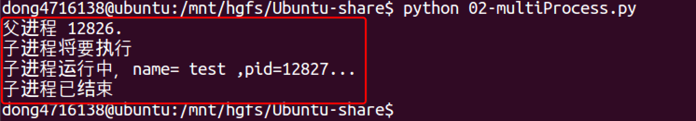

multiprocessing
如果你打算编写多进程的服务程序，Unix/Linux无疑是正确的选择。由于Windows没有fork调用，难道在Windows上无法用Python编写多进程的程序？
由于Python是跨平台的，自然也应该提供一个跨平台的多进程支持。multiprocessing模块就是跨平台版本的多进程模块。
multiprocessing模块提供了一个Process类来代表一个进程对象，下面的例子演示了启动一个子进程并等待其结束：
#coding=utf-8
from multiprocessing import Process
import os
# 子进程要执行的代码
def run_proc(name):
print('子进程运行中，name= %s ,pid=%d...' % (name, os.getpid()))
if __name__=='__main__':
print('父进程 %d.' % os.getpid())
p = Process(target=run_proc, args=('test',))
print('子进程将要执行')
p.start()
p.join()
print('子进程已结束')
运行结果: 
说明
- 创建子进程时，只需要传入一个执行函数和函数的参数，创建一个Process实例，用start()方法启动，这样创建进程比fork()还要简单。
- join()方法可以等待子进程结束后再继续往下运行，通常用于进程间的同步。
Process语法结构如下：
Process([group [, target [, name [, args [, kwargs]]]]])
target：表示这个进程实例所调用对象；
args：表示调用对象的位置参数元组；
kwargs：表示调用对象的关键字参数字典；
name：为当前进程实例的别名；
group：大多数情况下用不到；
Process类常用方法：
is_alive()：判断进程实例是否还在执行；
join([timeout])：是否等待进程实例执行结束，或等待多少秒；
start()：启动进程实例（创建子进程）；
run()：如果没有给定target参数，对这个对象调用start()方法时，就将执行对象中的run()方法；
terminate()：不管任务是否完成，立即终止；
Process类常用属性：
name：当前进程实例别名，默认为Process-N，N为从1开始递增的整数；
pid：当前进程实例的PID值；
实例1
from multiprocessing import Process
import os
from time import sleep
# 子进程要执行的代码
def run_proc(name, age, **kwargs):
for i in range(10):
print('子进程运行中，name= %s,age=%d ,pid=%d...' % (name, age,os.getpid()))
print(kwargs)
sleep(0.5)
if __name__=='__main__':
print('父进程 %d.' % os.getpid())
p = Process(target=run_proc, args=('test',18), kwargs={"m":20})
print('子进程将要执行')
p.start()
sleep(1)
p.terminate()
p.join()
print('子进程已结束')
运行结果:
父进程 21378.
子进程将要执行
子进程运行中，name= test,age=18 ,pid=21379...
{'m': 20}
子进程运行中，name= test,age=18 ,pid=21379...
{'m': 20}
子进程已结束
实例2
#coding=utf-8
from multiprocessing import Process
import time
import os
#两个子进程将会调用的两个方法
def worker_1(interval):
print("worker_1,父进程(%s),当前进程(%s)"%(os.getppid(),os.getpid()))
t_start = time.time()
time.sleep(interval) #程序将会被挂起interval秒
t_end = time.time()
print("worker_1,执行时间为'%0.2f'秒"%(t_end - t_start))
def worker_2(interval):
print("worker_2,父进程(%s),当前进程(%s)"%(os.getppid(),os.getpid()))
t_start = time.time()
time.sleep(interval)
t_end = time.time()
print("worker_2,执行时间为'%0.2f'秒"%(t_end - t_start))
#输出当前程序的ID
print("进程ID：%s"%os.getpid())
#创建两个进程对象，target指向这个进程对象要执行的对象名称，
#args后面的元组中，是要传递给worker_1方法的参数，
#因为worker_1方法就一个interval参数，这里传递一个整数2给它，
#如果不指定name参数，默认的进程对象名称为Process-N，N为一个递增的整数
p1=Process(target=worker_1,args=(2,))
p2=Process(target=worker_2,name="dongGe",args=(1,))
#使用"进程对象名称.start()"来创建并执行一个子进程，
#这两个进程对象在start后，就会分别去执行worker_1和worker_2方法中的内容
p1.start()
p2.start()
#同时父进程仍然往下执行，如果p2进程还在执行，将会返回True
print("p2.is_alive=%s"%p2.is_alive())
#输出p1和p2进程的别名和pid
print("p1.name=%s"%p1.name)
print("p1.pid=%s"%p1.pid)
print("p2.name=%s"%p2.name)
print("p2.pid=%s"%p2.pid)
#join括号中不携带参数，表示父进程在这个位置要等待p1进程执行完成后，
#再继续执行下面的语句，一般用于进程间的数据同步，如果不写这一句，
#下面的is_alive判断将会是True，在shell（cmd）里面调用这个程序时
#可以完整的看到这个过程，大家可以尝试着将下面的这条语句改成p1.join(1)，
#因为p2需要2秒以上才可能执行完成，父进程等待1秒很可能不能让p1完全执行完成，
#所以下面的print会输出True，即p1仍然在执行
p1.join()
print("p1.is_alive=%s"%p1.is_alive())
执行结果:
进程ID：19866
p2.is_alive=True
p1.name=Process-1
p1.pid=19867
p2.name=dongGe
p2.pid=19868
worker_1,父进程(19866),当前进程(19867)
worker_2,父进程(19866),当前进程(19868)
worker_2,执行时间为'1.00'秒
worker_1,执行时间为'2.00'秒
p1.is_alive=False